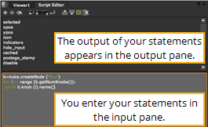
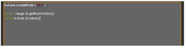

如果您没有使用第三方 Python 解释器，您可以将 Python 脚本键入 核武器 的脚本编辑器。
要打开脚本编辑器，请单击其中一个内容菜单并选择 脚本编辑器 从打开的菜单中。
脚本编辑器分为两部分，如下图所示。您使用下部 (输入窗格) 输入和执行 Python 语句，当您这样做时, 语句及其输出显示在编辑器的上部 (输出窗格)。成功执行的语句后面跟着一个哈希标记 ( # )。
|
 |
| 脚本编辑器的两个部分。 |
要隐藏输出或输入窗格，请单击 仅显示输入 或 仅显示输出 按钮 在脚本编辑器的顶部。
要再次显示两个窗格，请单击 显示输入和输出 按钮 .
要在脚本编辑器中输入语句:
| 1。 | 单击编辑器的输入窗格将光标插入其中。 |
| 2. | 键入您的声明。要使用通常的编辑功能，如复制和粘贴，请在编辑器上单击鼠标右键，然后选择所需的功能。 |
当输入语句时，您会注意到任何 Python 关键词 (如 打印 和 导入 ) 变成绿色，而字符串 (基本上，引号中的任何东西) 变成红色或青色。注释以黄色显示。

如果你喜欢，你可以改变这些颜色和字体 脚本编辑器 首选项对话框的选项卡。要打开首选项，请按 转变 S .
提示: 您还可以使用自动完成来帮助您输入 Python 语句。开始编写命令并按 标签 关键。如果只有一种方法可以结束你的命令, 核武器 自动完成它马上。如果有几个可能的完井, 核武器 给你一个弹出菜单列出它们。如果没有已知的方法来完成你的命令，什么也不会发生。即使你的命令自动完成，它也不会自动执行，以防你不喜欢意外的副作用。
| 3. | 如果您的语句包括几行，或者您想同时输入几条语句，请按 返回 移动到下一行。 |
| 4. | 要执行该语句，请单击 运行当前脚本 编辑器顶部的按钮，或按 Ctrl/Cmd + 返回 . |
提示: 还可以通过按执行语句 Ctrl/Cmd 输入 在数字键盘上。
默认情况下，成功语句从输入窗格中消失，并出现在输出窗格中。 但是，如果希望所有语句在执行后留在输入窗格中，可以执行以下操作:
| 1。 | 新闻 转变 + S 打开 “首选项” 对话框。 |
| 2. | 转到 脚本编辑器 标签。 |
| 3. | 取消选中 清除成功执行脚本时的输入窗口 . |
| 4. | 单击 关闭 仅保存当前项目的首选项，或 保存 Prefs 保存当前和未来项目的偏好。 |
如果输入无效语句, 核武器 在脚本编辑器的输出窗格中产生错误，将无效语句保留在输入窗格中。更正语句并再次执行，直到正确。
注意: 有时，如果您从其他来源 (如电子邮件) 将语句复制并粘贴到脚本编辑器中，可能会出现错误。这可能是由复制语句的源的标记或编码引起的。要解决问题，请手动重新输入语句。
如果您希望所有执行的 Python 命令都出现在脚本编辑器的输出窗格中，请打开 “首选项” 对话框 (按 转变 S )，转到 脚本编辑器 标签，并检查 将所有命令回显到输出窗口 。这适用于自己执行的命令和由 核武器 。例如，如果从工具栏中选择一个节点，则相应的 Python 命令将显示在 “输出” 窗格中。然而，这并不适用于您在图形用户界面中执行的所有操作，而只适用于那些通过执行 Python 脚本命令执行的操作。
要只执行脚本的一部分，请在输入窗格中输入脚本，然后选择要执行的部分。新闻 Ctrl/Cmd 返回 . 核武器 运行脚本的选定部分，将脚本保留在输入窗格中。
要重复语句，请单击 上一个脚本 按钮 在编辑的顶部，回到以前的声明。你可以这样做，直到你到达你想重复的语句。要再次执行该语句，请按 Ctrl/Cmd 输入 .
要增加输入窗口中的缩进，请按 标签 .
要减少输入窗口中的缩进，请按 转变 标签 .
除了向后浏览脚本的历史，你还可以向前一步。单击 下一个脚本 按钮 继续你的陈述。
要清除历史记录，请单击 清除历史 按钮。
单击 清除输出窗口 按钮 (或按 Ctrl / Cmd 退格 )。
|
|